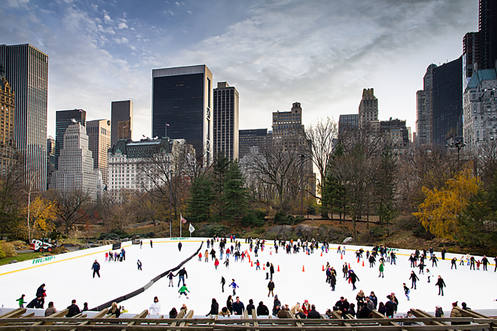

Young And Free NYC Kids
It's no secret that New York City is a great place for families. But all that exploring can cost you a pretty penny—unless you know where to look. You won't have to wander far to find free-admission days at museums, gratis concerts and films, complimentary story sessions and exciting events that let you leave your wallet tucked happily away. Forget staying at home to save money. We've rounded up the best free ways for young locals and visitors to get out on the town.
- Museums
- Zoos and Gardens
- Entertainment
- Reading Series
- Miscellaneous
- Museums
For culturally curious kids and their moms and dads on a budget, these family-friendly institutions—all of which offer specific days or hours of free entrance—provide inspiring educational outings.
Brooklyn Children's Museum
Free Thursdays 3–5pm and every third Thursday of the month, 3–7pm.
Spend a few hours at this Crown Heights institution, home to around 30,000 artifacts and objects (plus a few live creatures) with an emphasis on hands-on learning. There's even a special section, Totally Tots, for children 5 and under—a testament to the museum's education-for-all-ages mentality.
Children's Museum of Manhattan
Free every first Friday of the month, 5–8pm.
Little museumgoers dance, run, solve problems, design and make music at this Upper West Side spot. Exhibitions focus on health, diversity and just plain fun things like cartoons, while workshops and special events serve to captivate visitors whenever they choose to visit.
Museum of the Moving Image
Free for kids under 3 and free Fridays, 4–8pm.
Budding cinephiles can head to Astoria for the country's biggest collection of moving-image artifacts. This interactive institution pays tribute to all aspects of movies, television shows and digital media, from technology to social impact.
New York Hall of Science
Free Fridays, 2–5pm, and Sundays, 10–11am, September–June.
Kids get hands-on with science and technology at this Queens institution that features more than 450 exhibitions. There are a few worthwhile things to spend money on during your visit: a round of Rocket Park Mini Golf, a turn in the 60,000-square-foot Science Playground and a screening inside the 3-D theater.
New York Transit Museum Galley Annex & Store Free daily.
Located on the main concourse in Grand Central Terminal, this offshoot of downtown Brooklyn’s Transit Museum presents rotating exhibitions, including a holiday train show (which stays up well after the holidays have passed!).
Queens County Farm Museum
Grounds free daily (check to see if a ticketed public event is occurring).
Take the kids to this working farm and check out goats, hens and pigs, the orchard (from which you can purchase apples on October weekends), old farm buildings and the like. Waterfront Museum and Showboat Barge
Free Thursdays, 4–8pm, and Saturdays, 1–5pm.
Come tour this history wooden barge that is moored down on Brooklyn's Red Hook, not far from the Fairway Market. Check to see if a performance is taking place—perhaps a magic-, music- or history-related event that may cost money.
Zoos and Gardens
Explore NYC's animal kingdom and plant habitats without spending a dime. Many of the City's nature spots offer free or pay-what-you-wish admission. Get close to the creatures at the Staten Island Zoo, gaze at fish at the New York Aquarium or wander through Wave Hill's colorful grounds.
Bronx Zoo
Suggested donation on Wednesdays.
Brooklyn Botanic Garden
Free weekdays November 1–February 28; free Tuesdays all day and Saturdays 10am–noon, March 1–October 31.